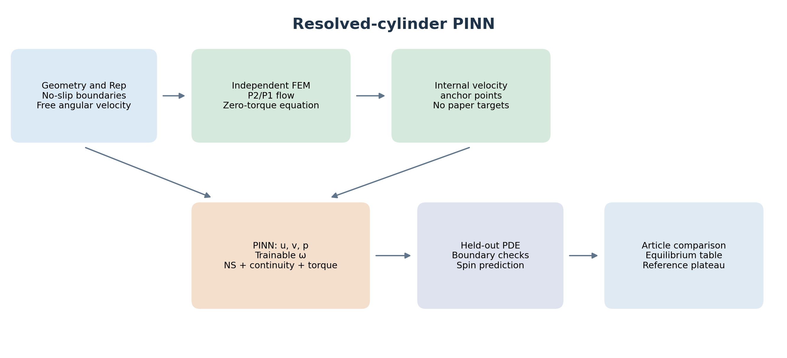
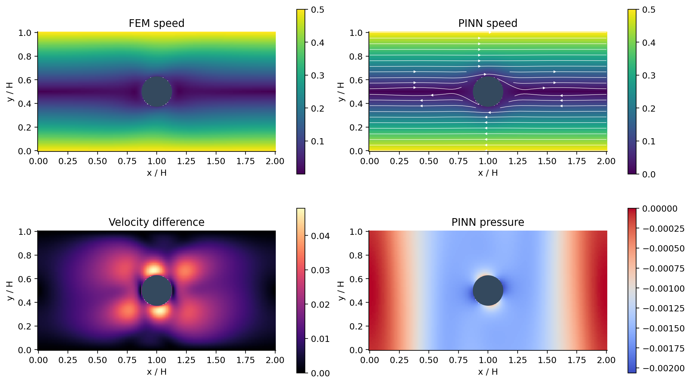
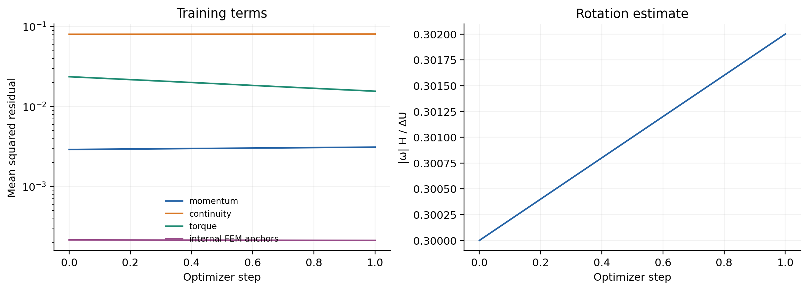
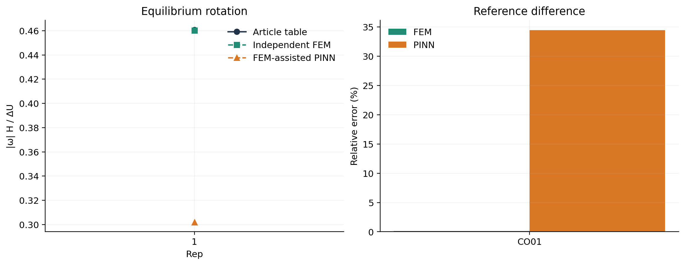
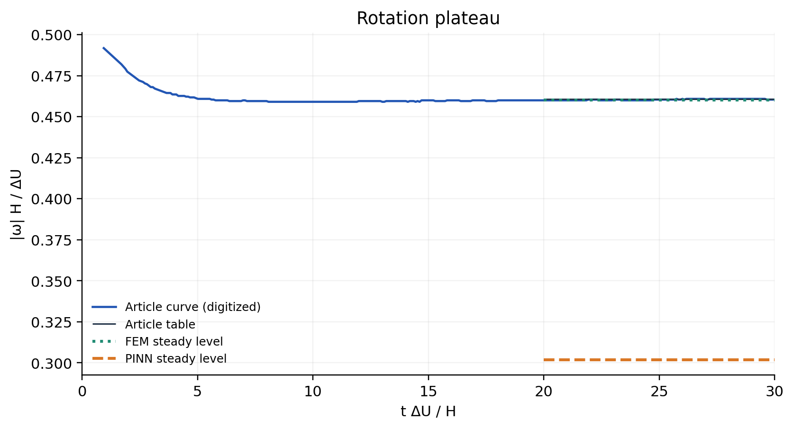
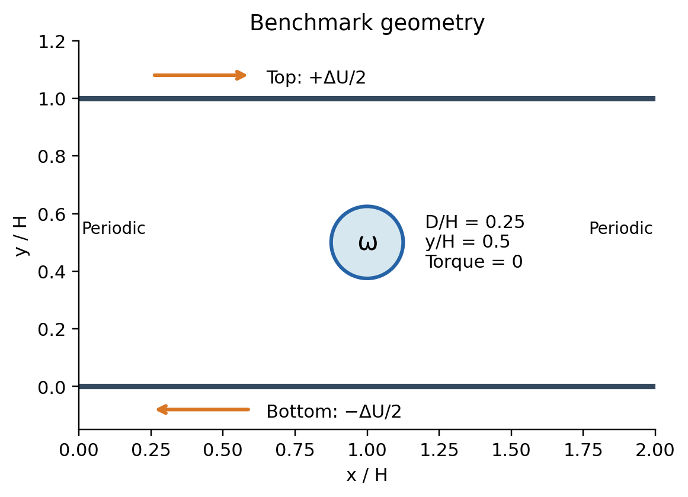
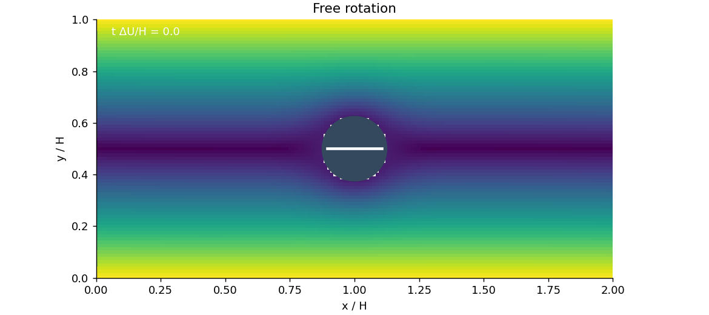

Couette equilibrium rotation
مقایسهٔ مستقیم سرعت دوران تعادلی استوانه با مقاله؛ مرکز استوانه در خط تقارن قرار داده شده و مسیر مهاجرت اولیه در این آزمون بررسی نمیشود.
FEM-assisted PINN; article targets held out. This is a conditional equilibrium-spin benchmark. The original Gaussian parcel model is not validated by this comparison.
Full metrics and criteria · CSV table · LaTeX table · Scientific report · Reference extraction
| case_id |
reference_spin |
FEM_spin |
PINN_spin |
FEM_error_percent |
PINN_error_percent |
physics_criteria_met |
| CO01 |
0.4608 |
0.46018 |
0.302 |
0.1347 |
34.462 |
False |
Resolved-cylinder PINN

The field network and a trainable angular velocity are constrained by Navier–Stokes, continuity, hard no-slip and zero torque. FEM-generated velocity data assist training. Published spin values are used only in the final comparison.
PNG · PDF · SVG
Couette flow

CO01: fields in the frame moving at ΔU/2. Cylinder center y/H=0.5 is prescribed. PINN uses internally generated FEM velocity anchors; the relative velocity L2 error on independent points is 8.856%. Article values are held out.
PNG · PDF · SVG
Training history

CO01: horizontal axis is optimizer iteration, not physical time. The paper target was not supplied to training or checkpoint selection.
PNG · PDF · SVG
Equilibrium rotation

Direct comparison with the supplied finest-grid article table at Rep=1 and 2. Lines connect two evaluated conditions; they are not a continuous Reynolds sweep. No parameter was tuned to either article spin value.
PNG · PDF · SVG
Rotation plateau

The blue curve is digitized from supplied Figure 2(b). FEM/PINN predict only the steady angular speed, shown over the final reference window t=20–30. They do not predict or validate the preceding transient relaxation. The numerical table is the primary target.
PNG · PDF · SVG
Benchmark geometry

Original walls (0, ΔU) are transformed by a Galilean velocity ΔU/2. The cylinder translates with the symmetry-plane fluid velocity and rotates freely. Its symmetry-plane position is an input, not a validated prediction.
PNG · PDF · SVG
Free rotation

Kinematic rendering of the PINN-predicted steady rotation. It does not show simulated startup, acceleration or lateral migration.
GIF · MP4